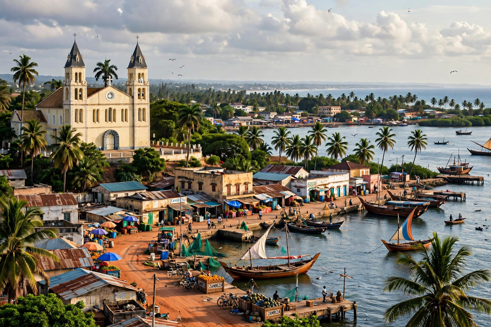

Quelimane is a seaport city in Mozambique, capital of Zambezia Province, on the Rio dos Bons Sinais about 20 km from the Indian Ocean. With a population of roughly 350,000 (2017 census area estimates vary), it is Mozambique's fourth-largest city.

A Swahili trading centre before Vasco da Gama visited in 1498, Quelimane became a Portuguese settlement exporting ivory, slaves, and later agricultural produce from prazo estates in the Zambezi valley. David Livingstone reached the coast here in 1856 after crossing Africa. The city grew as terminus for trade from the interior.
The port handles tea, sisal, copra, cotton and sugar from Zambezia. Quelimane has an airport and road links inland; its harbour is limited by a sandbar and silting.
The low-lying city is vulnerable to flooding and cyclones from the Mozambique Channel.